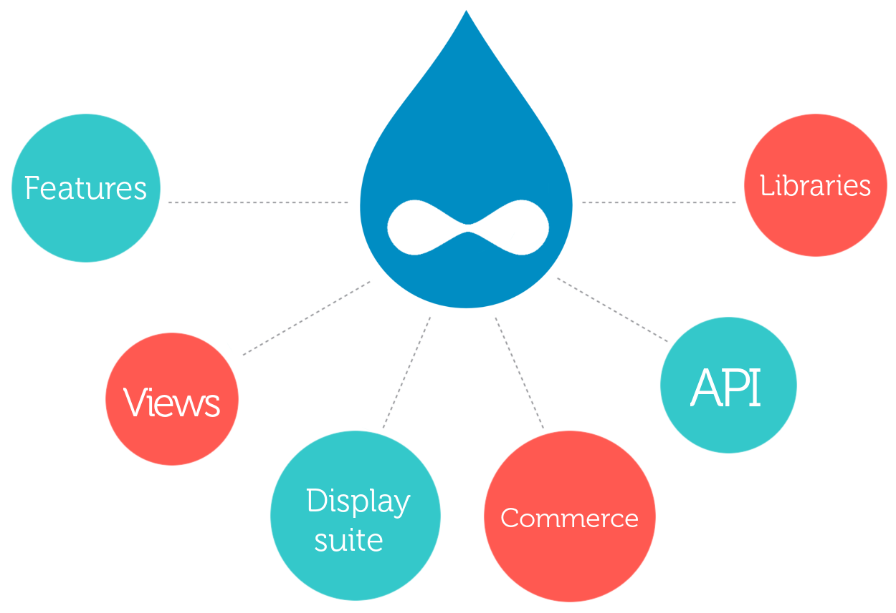
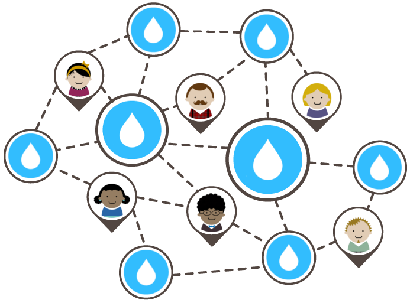
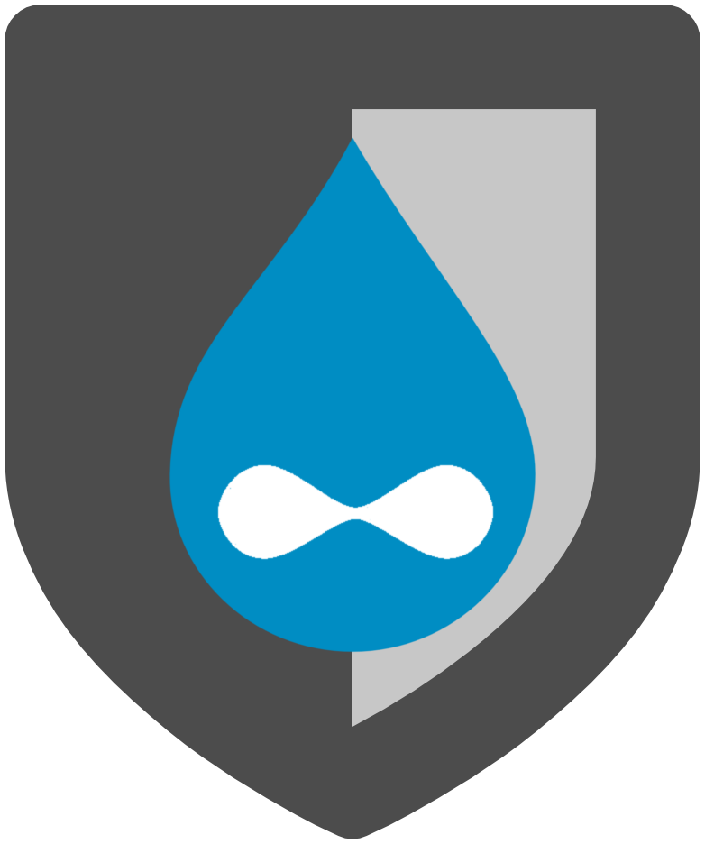

_ _ _ _ _ _ _ _ _ _ _ _ _ _ _ _ _ _ _ _ _ _ _ _ _ _ _ _ _ _ _
Introducción a Drupal + Docker
_ _ _ _ _ _ _ _ _ _ _ _ _ _ _ _ _ _ _ _ _ _ _ _ _ _ _ _ _ _ _

DrupalDay Murcia 2015

Qué es Docker
Transportes antes de los 60
¿Cómo lo solucionaron?
Contenedores de transporte

¿Por qué le gusta a los desarrolladores?
- Se construye una vez... y se ejecuta en cualquier parte
- Un entorno de ejecución limpio, seguro, higiénico y portable para tus aplicaciones.
- Una vez desplegado, no hay que volver a preocuparse por dependencias, paquetes y otras configuraciones que suelen traer dolores de cabeza.
- Cada aplicación se ejecuta en su propio contenedor aislado, eso nos permite tener distintas versiones de librerías y otras dependencias para cada aplicación sin preocupaciones.
¿Por qué le gusta a los desarrolladores?
- Test automáticos, integración continua, empaquetado... en definitiva, cualquier cosa para la que se pueda escribir un script.
- Elimina problemas sobre compatibilidad en diferentes plataformas, tanto en la tuya como en la de tus clientes.
- No hay penalización a la hora de desplegar servicios. Una VM sin la sobrecarga de una VM. Se pueden re-lanzar y resetear imágenes al instante.
¿Por qué le gusta a los administradores?
- Lo configuramos una vez... y lo ejecutamos cada vez que queramos.
- Consigue que el ciclo de vida sea más eficiente, consistente y repetible.
- Incrementa la calidad del código de los desarrolladores. Elimina inconsistencias entre entornos de desarrollo, test, producción, etc.
¿Por qué le gusta a los administradores?
- Mejora significativamente la velocidad en despliegues automáticos y en sistemas de integración continua.
- Como los contenedores son muy ligeros, se eliminan los problemas de rendimiento, costes, despliegues y problemas de portabilidad a los que normalmente están asociadas las VM.
Más detalles técnicos
A alto nivel: una VM ligera
- Propio espacio de procesos
- Propia interfaz de red
- Puede ejecutar órdenes como root
- Puede tener su propio /sbin/init
- Contenedor == Máquina
Más detalles técnicos
A bajo nivel: CHROOT con esteroides
- Puede no tener su propio /sbin/init
- Contenedor = procesos aislados
- Comparte el kernel con el host
- Contenedor == Aplicación
VMs vs Contenedores

Los contenedores están aislados, pero comparten el kernel
... lo que aporta los beneficios de las VM pero con mucha menos sobrecarga, más portabilidad y eficiencia
Vamos a la práctica!
Instalación de Docker
http://docs.docker.com/engine/installation/La magia de Docker Compose
https://docs.docker.com/compose/Guía rápida de Docker Compose
docker-compose.ymlhello:
image: hello-world
$ docker-compose up -d$ docker-compose stop$ docker-compose start$ docker-compose rm -fDockerfile
http://docs.docker.com/engine/reference/builder/Guía rápida de Dockerfile
DockerfileFROM hello-world:latest
MAINTAINER Ignacio López Flores
RUN ls /
docker build -t usuario/imagen:tag .hello:
build: .
Qué es Drupal
- Gestor de contenidos modular y muy configurable.
- Ideal para crear sitios web dinámicos y con gran variedad de funcionalidades.
Qué es Drupal
Miles de módulos y diseños creados para Drupal.
Minimiza código a medida.
Optimizando la eficiencia de portales.
Drupal es Flexibilidad
- Una de las plataformas más flexibles
- Altamente personalizable

Drupal es Amplia comunidad profesional
- Drupal.org tiene más de 1 millón de usuarios
- 230 paises
- 181 idiomas
- Profesionalización = Usuarios cualificados
Drupal es Open Source
Código abierto
Continuo crecimiento y desarrollo
Última generación
Drupal es Open Source
- Licencia GNU/GPL de libre uso
- Cambios de manera rápida
- Reducción de costes
- Escalable
- Solución de errores y mejora con más rapidez
Drupal es gratuito
Su licencia es de libre uso y su código es abierto
Drupal es Seguridad
Drupal.org mantiene a un equipo dedicado exclusivamente a la seguridad.
Drupal es Seguridad
Uno de los gestores de contenidos más seguros que existen ya que está construido con la seguridad en mente.
Control total de la plataforma y un sistema de permisos basado en roles.
Drupal es importante
Algunos de los organismos más importartes del mundo confian en drupal.
-
Internacionales:
Warner Bros, Zynga, PACKT Publishing, The Weather Channel, Mens Health, Le Figaro, Royal Mail, Gobierno francés, The Economist o la misma Casa Blanca -
Nacionales:
RAE, Kinepolis, Telemadrid, Museo Reina Sofía, Idealista News, McDonalds, Ayuntamiento de Castilla La Mancha, Parque de Atracciones de Madrid, Boing, Faunia, ... y cada día más.
Imagen oficial de Drupal
https://hub.docker.com/_/drupal/Nuestro propio Docker Compose
docker-compose.ymlweb:
image: drupal:7
ports:
- "5000:5000"
volumes:
- .:/code
links:
- db
db:
image: mysql:5.6
environment:
MYSQL_ROOT_PASSWORD=pass
MYSQL_DATABASE=database
MYSQL_USER=user
MYSQL_PASSWORD=passConceptos básicos en Drupal
- Tipos de contenido
- Templates
- Módulos
- View Modes
Módulos importantes
Hay miles de módulos en drupal.org
- Views
- Features
- Pathauto
- Xmlsitemap
- ...